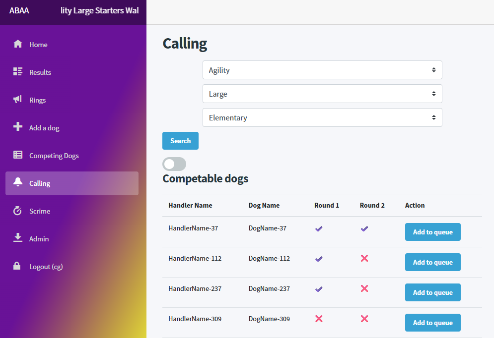

- Published on
My first foray into Godot as a Unity refugee
Backend developer and gaming enthusiast
Whether it's working in the trenches of technical debt improving an old system or working on greenfield projects using shiny new tech, I give any project I do my all.
PebblePad
April 2021 – Present
Developing internal tools to help generate bulk test data to test services on production sized data sets in order to monitor performance impacts
Assisting in creating of new development processes in order to ensure quality is delivered.
Working within Cloud tech stacks to deliver a storage limitation service with the goal of helping maintain a healthy database
Various analyser projects to help ensure code quality standards are adhered to
Codeweavers
August 2019 - April 2021
Working closely with product owners, account managers and end users to translate business problems into platform solutions
Working solo and within a team to implement and deliver new features and maintain legacy code
Assisting customers to help resolve any issues they may be encountering
Fasetto
August 2017 - May 2019
Creating and maintaining Android and iOS applications using Xamarin, C#
Created various web pages using C# (using Bridge.net), Scss and HTML
Manual testing of the product from initial prototyping to final polishing and bug fixing
Mentoring and aiding junior members of the team
C# developer, backend enthusiast, gamer, consumable hoarder
Some projects I've been working on recently
